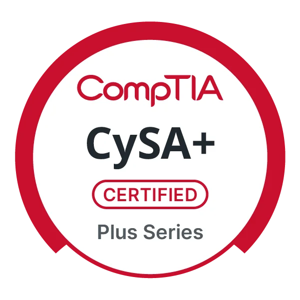
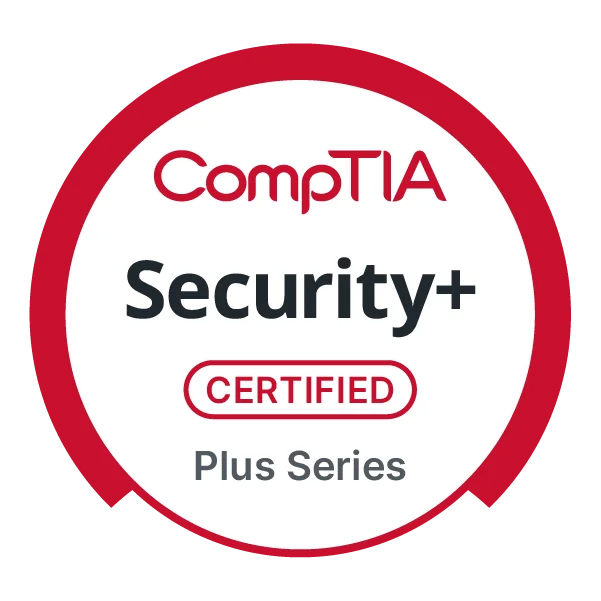

The exam asks "What is the BEST solution" and "What is the NEXT step" — these are different questions. The BEST long-term remediation (e.g., patch the system) is NOT the NEXT step during active incident response (e.g., contain first). Read every question word for word.
- Study approach: 6–8 hours per weekday · two practice tests daily during exam week · 3 weeks total. The Sybex Official Study Guide provided the clearest explanations on CySA+.
- Key focus areas: Incident Response Lifecycle · Threat Intelligence · Log Analysis · IOC identification · Remediation prioritization
- Flag and return: If a question requires reasoning you haven't done yet, flag it and move on. Come back with fresh eyes — time rarely runs out if you pace at ~1 min/question.
- Elimination strategy: On scenario questions, eliminate the two obviously wrong answers first. The correct answer is almost always one of the remaining two.
The cornerstone of CySA+. When a question asks "what should you do next," map the scenario to this lifecycle before answering. The Containment step is the most commonly tested.
- Unusual traffic volume spikes or unexpected protocol usage
- DNS or IP anomalies — queries to known-malicious domains, unexpected external IPs
- Unauthorized devices or rogue connections on the network
- Suspicious data transfers or outbound traffic to unusual destinations (exfiltration)
- Repeated unauthorized access attempts or login failures from a single source
- Unexpected processes running, especially with encoded or obfuscated command lines
- Unauthorized software installations or changes to critical system files
- Changes to user account privileges, new accounts created without authorization
- Unusual scheduled tasks (schtasks) or startup persistence entries
- System log entries showing unusual errors, crashes, or privilege escalation
- Unusual or unauthorized user activity — logins from new locations, off-hours access
- Unauthorized changes to application configuration or database schema
- Suspicious application traffic to known malicious domains or IP ranges
- Presence of web shells, unauthorized files, or known exploit signatures
- Evidence of data exfiltration — large SELECT queries, bulk data exports
| Range | Category | Description |
|---|---|---|
| 100–199 | Informational | Server received request and is continuing process |
| 200–299 | Success | Request was received, understood, and fulfilled |
| 300–399 | Redirection | Client must take additional action to complete request |
| 400–499 | Client Error | Request contains bad syntax or cannot be fulfilled |
| 500–599 | Server Error | Server failed to fulfil an apparently valid request |
200 OK— Standard success response301 Moved Permanently— Resource permanently relocated302 Found— Temporary redirect (often used in login flows)401 Unauthorized— Authentication required403 Forbidden— Authenticated but lacking permission404 Not Found— Resource does not exist500 Internal Server Error— Generic server-side failure
TCP SYN Scan -sS
Most popular and fastest scan. Stealthier than connect scan — sends SYN, doesn't complete handshake. Requires root/sudo.
TCP Connect Scan -sT
Full three-way handshake. Used by unprivileged users or for IPv6. More detectable — creates full connection log entries.
UDP Scan -sU
Slower than TCP scans. Critical — UDP ports host DNS (53), SNMP (161), DHCP (67/68). Don't skip UDP in assessments.
FIN/NULL/Xmas -sF -sN -sX
Bypass some firewalls by sending non-standard flags. Unreliable against Windows (returns RST for all closed ports regardless).
ACK Scan -sA
Maps firewall rules — determines if ports are filtered vs. unfiltered. Cannot distinguish open from closed.
Idle Scan -sI
Stealthiest method — uses a zombie host as a proxy. Slow and complex. Results can be unreliable in practice.
-f # Fragment packets into smaller pieces --mtu <number> # Set packet size (must be multiple of 8) --scan-delay <time> # Add delay between probes to evade rate-based IDS --badsum # Send invalid checksum — detects firewall/IDS presence -Pn # Skip ping, assume host is up (bypass ICMP blocking) -D <decoy1,decoy2> # Use decoy IPs to obscure true source
- Closed port: Target responds with RST flag — host is reachable, port is closed
- Filtered port: No response — firewall is dropping packets silently
- -Pn caveat: Bypasses ICMP blocking but adds significant time if host is actually down
- Default scan: SYN (-sS) with root/sudo; Connect (-sT) without privileges
# Capture on interface (no DNS resolution) tcpdump -i eth0 -n # Filter by protocol tcpdump -i eth0 -n tcp tcpdump -i eth0 -n udp tcpdump -i eth0 -n icmp # Filter by host or network tcpdump -i eth0 -n host 192.168.1.100 tcpdump -i eth0 -n net 192.168.1.0/24 # Filter by port tcpdump -i eth0 -n port 80 tcpdump -i eth0 -n 'port 80 or port 443' # Save to pcap file / read from file tcpdump -i eth0 -n -w capture.pcap tcpdump -r capture.pcap # Verbose with hex+ASCII output tcpdump -i eth0 -n -vvv -X
# All active connections (TCP + UDP) netstat -a # TCP connections with numeric addresses netstat -ant # UDP connections netstat -anu # Listening ports only netstat -tlnp # TCP listening with process IDs netstat -ulnp # UDP listening with process IDs # Network interface statistics netstat -i # Routing table netstat -r # Extended info with process names (Linux) ss -tulnp # Modern replacement for netstat
# Basic A record lookup dig example.com # Query specific record types dig example.com MX dig example.com TXT dig example.com NS dig example.com AAAA # Reverse DNS lookup dig -x 8.8.8.8 # Specify upstream DNS server dig example.com @8.8.8.8 # Short output (answer only) dig example.com +short # Trace full resolution path dig example.com +trace # Zone transfer attempt (test for misconfiguration) dig axfr @ns1.example.com example.com
Know these by number — exam questions reference severity levels numerically. Level 0 is most severe.
| Level | Name | Description |
|---|---|---|
0 | Emergency | System is unusable — panic condition |
1 | Alert | Action must be taken immediately |
2 | Critical | Critical hardware or software failures |
3 | Error | Non-urgent failures requiring attention |
4 | Warning | Not an error, but may become one if unaddressed |
5 | Notice | Normal but significant — worth reviewing |
6 | Informational | Normal operational messages |
7 | Debug | Detailed diagnostic output for troubleshooting |
CVSS v3.1 provides a standardized 0–10 score for vulnerability severity. Used for patch prioritization.
| Rating | Score Range | Response Priority |
|---|---|---|
| None | 0.0 | Informational only |
| Low | 0.1–3.9 | Patch in next maintenance window |
| Medium | 4.0–6.9 | Patch within 30 days |
| High | 7.0–8.9 | Patch within 7 days |
| Critical | 9.0–10.0 | Immediate — patch within 24–72 hours |
- Attack Vector (AV): Network / Adjacent / Local / Physical — lower access = higher score
- Attack Complexity (AC): Low or High — Low means repeatable exploitation
- Privileges Required (PR): None / Low / High — None = highest severity contribution
- User Interaction (UI): None or Required — None is worse
- Scope (S): Unchanged or Changed — Changed means impact crosses trust boundaries
- CIA Impact: Confidentiality, Integrity, Availability — each rated None/Low/High
# Basic TCP SYN test (handshake probe) hping3 -S <target> -p 80 # ICMP ping sweep hping3 -1 <target> # Traceroute via TCP hping3 --traceroute -V -S -p 80 <target> # Firewall ACL testing — send UDP to closed port hping3 -2 <target> -p 161 # Fragmentation test hping3 -S -f <target> -p 80 # Time-to-live manipulation hping3 -S -t 1 --traceroute <target>
Exam note: Hping3 is tested primarily in the context of firewall rule validation and network testing, not attack simulation. Know the flag types: -S (SYN), -A (ACK), -F (FIN), -1 (ICMP), -2 (UDP).